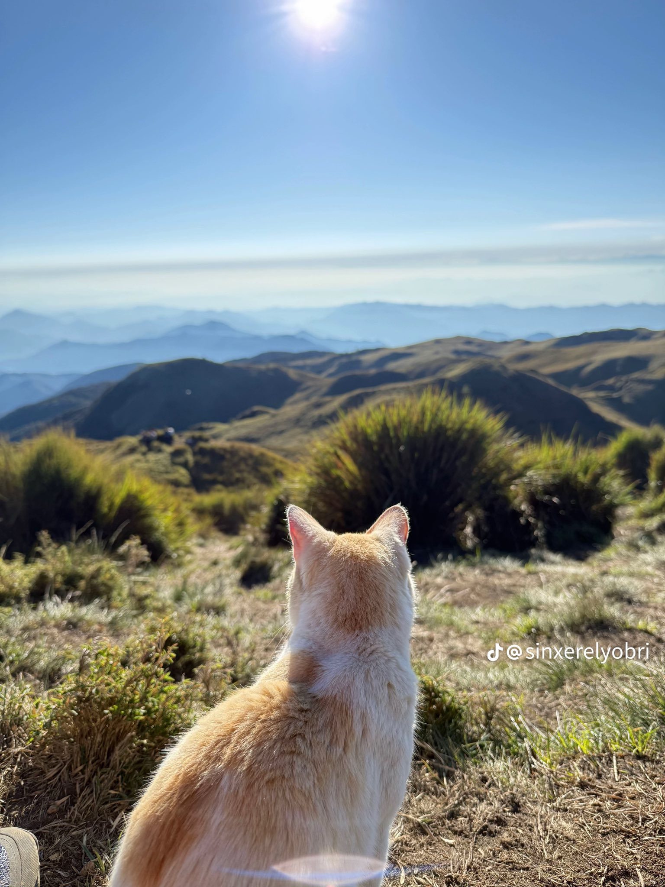

|
|
| Back to Homepage | Different type duck | Famous & rare animal | different type of snake | Registration form |
PUGAL, the Celebrity Cat of Mt. Pulag – UPDATEPugal has been safely brought down from Mt. Pulag. The DENR has taken custody of him, as domestic animals—especially cats—are not allowed in protected areas like Mt. Pulag due to the risks they pose to endemic wildlife.We understand and respect this decision. The Cordilleran Sun said Cats like Pugal, no matter how friendly or well-loved, are natural predators that can disrupt delicate ecosystems, especially in biodiversity hotspots like Mt. Pulag. Still, our hearts ache for Pugal. He made a home there, won the affection of hikers, and touched many lives with his charm. It’s hard not to feel for him, now that he’s been taken away from the only place he’s known. We’ve already been informed about the person who adopted Pugal through the DENR. He will be brought to Bokod. We also offered to take him in ourselves to ensure he could be neutered and vaccinated, but we were told an adopter has already committed to caring for him. We will follow up with the adopter as soon as they are reachable (currently, they are in an area without signal). Thank you to everyone who cared for Pugal, and thank you to those who continue to advocate for both animal welfare and environmental protection. May we always find the balance between compassion and conservation. 📸 Here are some beautiful moments of Pugal on the mountain — facing the sun, surrounded by the serenity of the peaks he once called home. Thank you to @sinxerelyobri on TikTok for capturing and sharing these moments. |
|  |
Unique cat-capybara friendship a big visitor draw at Zoo NegaraKUALA LUMPUR: Visitors are flocking to Zoo Negara to see Oyen, a cat which has developed a special bond with a herd of capybara here.br> Zoo Negara vice president Rosly@Rahmat Ahmat Lana said over 3,000 people visited the zoo over the weekend to see the ginger-coloured cat fraternising with the large rodents. Rosly said Oyen is now the "Star of Zoo Negara" and has gained extraordinary popularity following its unique friendship with the capybaras over the past three years. "Every day, 95% of the visitors are here just to see Oyen. He is very popular. In fact, the number of visitors doubles during weekends," he said to reporters here on Tuesday (Aug 8) after the installation of Oyen's official sign in front of the capybara enclosure in conjunction with World Cat Day which is celebrated on Aug 8. He said the new sign is to replace the old one which was accidentally damaged by visitors. Rosly also said his team intends to find a partner for Oyen so that its line can continue. He said the zoo would also take care of the cat's well-being, including giving it nutritious food and monitoring its health. |
| Copyright All Right Reserve 2025 |